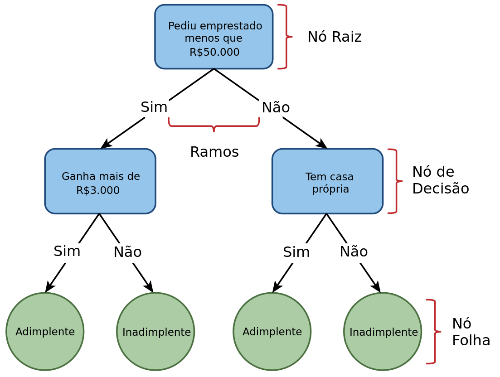
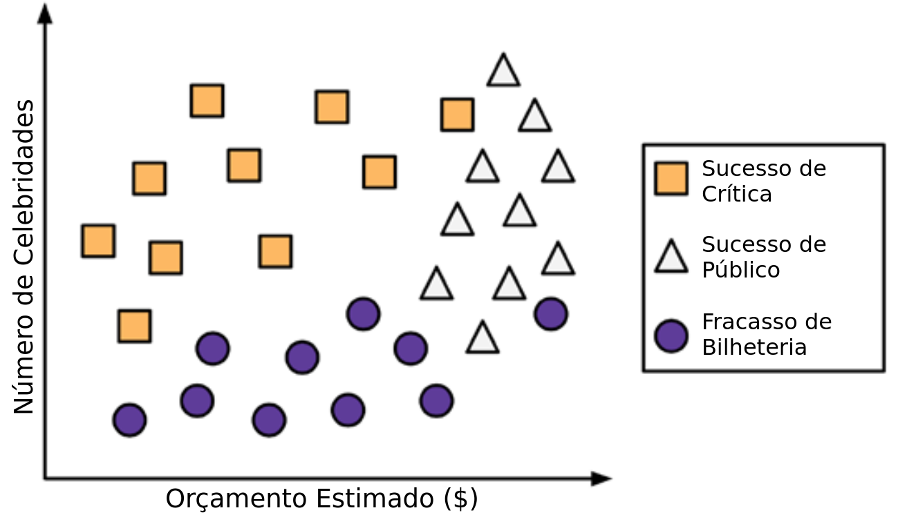
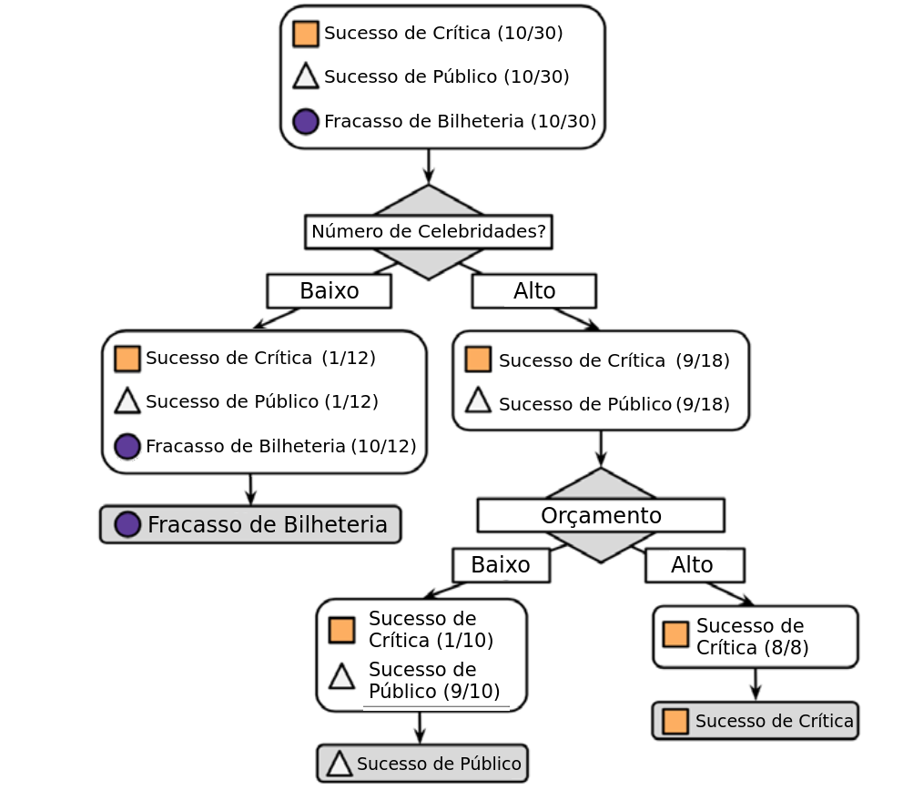
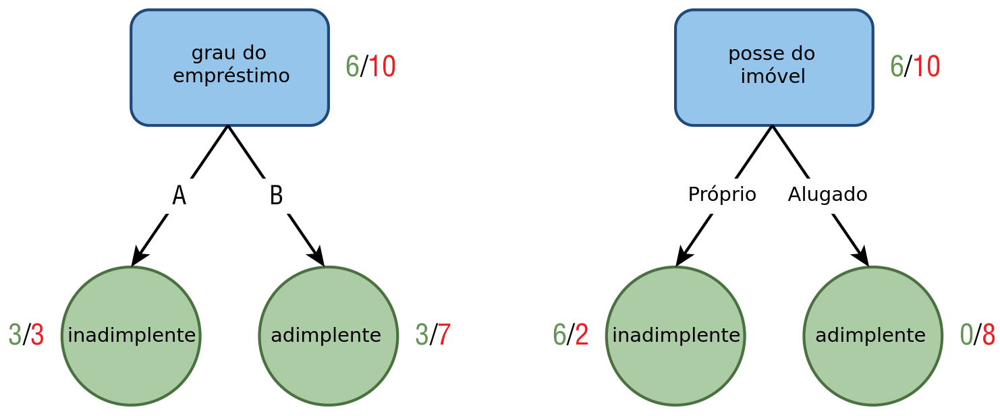

Árvores de Decisão
ESTAT0109 – Mineração de Dados em Estatística
Prof. Dr. Sadraque E. F. Lucena
sadraquelucena@academico.ufs.br
http://sadraquelucena.github.io/mineracao
Objetivo da Aula
- Compreender o funcionamento do algoritmo de Árvores de Decisão.
Introdução
- Árvores de decisão são métodos de classificação que usam a estratégia dividir para conquistar.
- O objetivo é segmentar os dados em subgrupos menores até que eles sejam o mais homogêneos possível (pura separação).
Analogia do Território
Imagine o conjunto de dados como um grande território inexplorado.
Dividir (Cerca): Escolhemos a característica mais informativa para traçar uma “cerca”, dividindo o território em pedaços menores.
Conquistar (Avaliar): Em cada pedaço, verificamos se o grupo já é uniforme. Se não for, dividimos novamente.
- Exemplo: “Se horas de estudo > 5 E frequência > 80%…” (Caminhamos para um lado do mapa).
Rotular (Concluir): Quando não vale mais a pena dividir, chegamos aos nós terminais (folhas). Ali, fincamos uma bandeira com a previsão final para aquela área.
Árvores de Decisão
- Modelos que utilizam uma estrutura hierárquica (fluxograma) para mapear relações entre preditores e resultados.
- Tipos principais:
- Árvore de Classificação: O resultado é uma categoria (ex: Sim/Não, Risco Alto/Baixo).
- Árvore de Regressão: O resultado é um valor numérico contínuo (ex: Salário, Temperatura).
Anatomia da Árvore
- Nó Raiz (Root Node): O topo da árvore. Representa a população inteira antes de qualquer divisão.
- Nó de Decisão (Internal Node): Pontos onde o algoritmo faz uma pergunta aos dados (ex: “A renda é maior que 5k?”).
- Cada resposta cria um Ramo (Branch) que leva a um novo nó.
- Nó Folha (Leaf Node): Os pontos terminais. Eles não se dividem mais e contêm a decisão final (a previsão ou classificação).
Árvores de Decisão
Exemplo de uma árvore de decisão.
Interpretabilidade e Regras
- As Árvores de Decisão são modelos “Caixa Branca”, ou seja, a lógica interna é transparente e pode ser lida por humanos.
- A árvore pode ser convertida diretamente em um conjunto de regras SE-ENTÃO (IF-THEN rules). Exemplo:
- SE [Renda < 2.000] E [Possui Fiador = Não]
- ENTÃO [Risco = Alto]
- Por que isso é importante?
- Compliance: Essencial para setores regulados (Bancos, Saúde, Seguros) que exigem justificativa para decisões automatizadas.
- Comunicação: Facilita explicar o modelo para gestores não técnicos.
- Vejamos agora como o algoritmo constrói essa estrutura.
Construção da árvore (particionamento recursivo)
Passo 1: Escolha do Nó Raiz
- Cada atributo é utilizado para dividir os dados em grupos distintos (geralmente em dois, no CART).
- O atributo que gera grupos mais homogêneos da variável alvo é escolhido como nó raiz.
Passo 2: Criação de Nós Filhos
- Para cada nó filho, subdivida o grupo usando o atributo que gera subgrupos mais homogêneos. Crie nós filhos para esses subgrupos.
Passo 3: Critério de Parada
- O nó é puro, atingiu profundidade máxima ou número mínimo de amostras.
Passo 4: Atribuição de Rótulo às Folhas
- Classificação: Voto majoritário (Moda).
- Regressão: Média dos valores do nó.
Construção da árvore
Exemplo
Um estúdio de Hollywood precisa decidir quais roteiros de autores iniciantes devem entrar em produção. Como não há tempo para ler completamente cada roteiro, você decide usar um algoritmo de árvore de decisão para prever se um possível filme se encaixaria em uma das três categorias: Sucesso de Crítica, Sucesso de Público ou Fracasso de Bilheteria.
- Para construir a árvore você considera como dados de treino os 30 lançamentos recentes do estúdio. Rapidamente você percebe uma relação entre o orçamento estimado para as filmagens, o número de celebridades escaladas para papéis principais e o nível de sucesso. Animado com essa descoberta, você produz um gráfico de dispersão para ilustrar o padrão:
Construção da árvore
Construção da árvore
- Passo 1: Para criar o nó raiz usamos o número de celebridades no filme.
Construção da árvore
- Passo 2: Nos filmes com muitas celebridades, subdividimos entre alto e baixo orçamento.

Construção da árvore
- O Risco do Crescimento Ilimitado:
- Poderíamos dividir os dados até que cada folha fosse 100% pura (apenas uma observação por folha).
- Isso levaria ao Sobreajuste (Overfitting): a árvore “decora” o ruído dos dados de treinamento e perde a capacidade de Generalização.
- Equilíbrio entre Complexidade e Erro:
- Árvores muito grandes são complexas e instáveis.
- Árvores muito pequenas podem ser simplistas (Underfitting).
- Nosso Critério de Parada (Heurística):
- Interrompemos a divisão quando um nó atinge 80% de homogeneidade (uma classe é amplamente majoritária).
Construção da árvore
Como o algoritmo propõe as divisões?
Antes de escolher o melhor atributo, o algoritmo identifica todos os pontos de divisão possíveis:
- Para Variáveis Categóricas: Testa todas as combinações binárias de grupos.
Exemplo: Atributo Cor {🔴, 🔵, 🟢}
- {🔴} vs {🔵, 🟢}
- {🔵} vs {🔴, 🟢}
- {🟢} vs {🔴, 🔵}
- Para Variáveis Numéricas: Os dados são ordenados e os candidatos são os pontos médios entre valores consecutivos observados.
- Exemplo: Valores de Orçamento {1, 3, 8, 11}
- Candidatos: \(\le 2.0\) | \(\le 5.5\) | \(\le 9.5\)
- Exemplo: Valores de Orçamento {1, 3, 8, 11}
Critério de Seleção: Pureza e Impureza
- O algoritmo busca a melhor separação. Para isso, ele precisa medir quão “misturados” os dados ficaram após o corte.
- Nó Puro: Contém apenas observações de uma única classe.
- Incerteza zero. Se cair aqui, a previsão é óbvia.
- Nó Impuro: Contém uma mistura de classes.
- O caso de máxima impureza ocorre quando as classes estão distribuídas igualmente (ex: 50% Sucesso / 50% Fracasso).
- A Regra de Ouro: O algoritmo testa todos os candidatos a corte (vistos no slide anterior) e escolhe aquele que resulta na menor impureza média nos nós filhos.
Entropia (Definição)
A Entropia quantifica o nível de desordem ou impureza de uma partição (quanto maior a “mistura”, maior a entropia).
Para um conjunto \(D\) com \(C\) classes, a entropia é calculada como: \[ \text{Entropia}(D) = - \sum_{c=1}^C p_c \log_2(p_c), \] em que
\(c\) representa uma classe da saída (\(c=1,\ldots,C\));
\(p_i\) é a proporção (probabilidade) de dados pertencentes a classe \(c\);
\(\log_2(\cdot)\) é o lograritmo na base 2.
Entropia (Propriedades)
- Escala: Varia de \(0\) (Pureza total: todos os dados são da mesma classe) a \(\log_2(C)\) (Impureza máxima: todas as classes em proporções iguais).
- Caso Binário (\(C=2\)): A entropia varia entre \(0\) e \(1\).
- Se \(p_1 = 1\) e \(p_2 = 0\), então \(\text{Entropia} = 0\) (Nó puro).
- Se \(p_1 = 0,5\) e \(p_2 = 0,5\), então \(\text{Entropia} = 1\) (Máxima incerteza).
Exemplo 12.1
Considere um conjunto de dados de treinamento com informações de 30 clientes de um banco, onde 16 quitaram suas dívidas (adimplentes) e 14 não quitaram (inadimplentes). Para analisar a entropia, uma partição é criada com base na decisão de se o cliente solicitou um empréstimo maior ou menor que R$ 50.000.
- Dentre os clientes que solicitaram mais de R$ 50.000, 10 são adimplentes e 6 são inadimplentes. Calcule a entropia (grau de impureza) nessa partição. \[ \text{Entropia}(D) = -\left[ \frac{10}{16}\,\log_2\left(\frac{10}{16}\right) + \frac{6}{16}\,\log_2\left(\frac{6}{16} \right) \right] = 0,\!9544 \]
- O valor está muito próximo de 1 (máxima impureza para 2 classes).
- Isso significa que a variável “Empréstimo > 50k”, isoladamente, ainda deixa os grupos muito misturados. Precisamos de mais divisões!
Entropia
- Podemos visualizar como a entropia varia em relação à distribuição dos exemplos quando temos duas classes.
- Ao conhecer a proporção de exemplos em uma classe (\(p_c\)), automaticamente sabemos que a proporção na outra classe é (\(1-p_c\)).
- Então temos:
Ganho de Informação
- O que é: Uma métrica para selecionar qual atributo deve formar o próximo nó da árvore.
- Lógica: Mede a redução da incerteza. O melhor atributo é aquele que mais “limpa” a confusão dos dados.
- Cálculo: É a diferença entre a entropia antes da divisão (Pai) e a entropia após a divisão (Filhos).
- Fórmula: \[ \text{Ganho de Informação}(A) = \text{Entropia}(D_{pai}) - \text{Entropia}(D_{filhos}). \]
- Objetivo: Maximizar o Ganho de Informação.
- Resultado: Ramos mais homogêneos (puros) e uma árvore mais eficiente.
Refinando o Ganho: Pesos e Proporções
1. Entropia Combinada dos Filhos
Como uma divisão gera vários nós, calculamos a média ponderada das entropias: \[ \text{Entropia}(D_{filhos}) = \sum_{i=1}^n w_i \,\text{Entropia}(D_i) \]
\(w_i\): É o “peso” do nó (proporção de dados que foi para aquele ramo).
- Ex: Se um ramo recebeu 20 de 30 clientes, seu peso \(w = 20/30\).
Refinando o Ganho: Pesos e Proporções
2. A Armadilha do Ganho de Informação
- Problema: O Ganho simples tende a favorecer atributos com muitas categorias únicas (ex: ID, CPF ou Datas). Eles criam partições “perfeitas”, mas inúteis para prever novos dados.
- Solução (Quinlan, 1986): Usar a Taxa de Ganho (Gain Ratio), que penaliza divisões excessivas: \[
\text{Taxa de Ganho}(A) = \frac{\text{Ganho de Informação}(A)}{\text{Informação Intrínseca}(A)}
\]
- Mais informações sobre a taxa de ganho podem ser encontradas em Quinlan, J. Ross. “Induction of Decision Trees.” Machine Learning 1.1 (1986): 81–106.
Exemplo 12.2
Vamos prosseguir com os dados do Exemplo 12.1. Agora, estamos prestes a criar uma partição no nó correspondente aos clientes que solicitaram mais de R$ 50.000. Nesse ponto, enfrentamos a escolha entre dois atributos para esta nova divisão: o grau do empréstimo (com categorias \(A\) e \(B\)) e posse do imóvel (próprio ou alugado). Para determinar qual atributo será utilizado na nova partição, é essencial avaliar o ganho de informação associado a cada um deles. Calcule o ganho de informação baseado na imagem abaixo.
Índice de Gini: Alternativa Prática
O que é: A métrica padrão do algoritmo CART. Mede a probabilidade de um elemento ser classificado incorretamente se rotularmos aleatoriamente.
Vantagem: É computacionalmente mais rápido que a Entropia (evita o cálculo de \(\log\)).
Fórmula: \[ \text{Gini}(D) = 1 - \sum_{c=1}^C p_c^2 \] em que \(p_c\) é a proporção de dados da classe \(c\).
O índice de Gini varia de \(0\) a \((C-1)/C\).
Para duas classes (\(C=2\)), o índice de Gini varia de \(0\) a \(0,\!5\).
- Mínimo (0.0): Pureza total (ex: 100% adimplentes \(\rightarrow 1 - 1^2 = 0\)).
- Máximo (0.5): Impureza máxima (50/50 \(\rightarrow 1 - (0,5^2 + 0,5^2) = 0,5\)).
Poda da Árvore (Pruning)
Problema: Uma árvore que cresce até a pureza total tende a sofrer de Overfitting. Ela “decora” o ruído dos dados de treino e perde o poder de generalização.
Solução: Reduzir a complexidade da árvore através da poda.
Objetivo: Encontrar o “ponto ideal” onde a árvore é simples o suficiente para ser interpretável, mas complexa o suficiente para capturar os padrões reais.
Dois tipos de poda podem ser usados: pré-poda pós-poda.
Pré-poda (Early Stopping)
- Ocorre durante a construção. O algoritmo decide não dividir um nó se certas condições forem atendidas:
- Profundidade Máxima: Ex: “Não passe de 5 níveis”.
- Mínimo de Amostras por Nó: Ex: “Não divida nós com menos de 20 clientes”.
- Ganho Mínimo: Ex: “Só divida se o Ganho de Informação for \(> 0.05\)”.
- Vantagem: Muito rápida e eficiente.
- Desvantagem: Pode ser simplista demais (Underfitting).
Pós-poda (Post-pruning)
- Deixa a árvore atingir sua complexidade máxima e depois “corta” os ramos que contribuem pouco para a acurácia.
- Estratégia: Substitui um sub-ramo inteiro por um único nó folha.
- Vantagem: Mais robusta. Ela permite que o algoritmo descubra relações complexas que só aparecem após várias divisões.
- Métrica comum: Cost-Complexity Pruning (usada no algoritmo CART).
Exemplo 12.3
Considere os dados abaixo e construa uma árvore de decisão para a variável sair usando a entropia para quantificar a impureza.
| Tempo | Temp. | FDS | Jogar? | Tempo | Temp. | FDS | Jogar? |
|---|---|---|---|---|---|---|---|
| Ensolarado | Quente | Sim | Sim | Ensolarado | Quente | Não | Não |
| Chuvoso | Moderado | Não | Não | Chuvoso | Moderado | Sim | Sim |
| Chuvoso | Quente | Sim | Não | Ensolarado | Quente | Sim | Sim |
| Ensolarado | Moderado | Não | Sim | Chuvoso | Moderado | Não | Não |
| Chuvoso | Quente | Não | Não | Ensolarado | Quente | Sim | Sim |
| Ensolarado | Moderado | Sim | Sim | Chuvoso | Moderado | Não | Não |
| Chuvoso | Quente | Sim | Sim | Ensolarado | Quente | Sim | Sim |
FDS: fim de semana.\(\quad\)Temp.: temperatura.
Algoritmos
Existem diversos algoritmos de árvores de decisão, cada um com suas características específicas e métodos de construção. Alguns são mais adequados para determinados tipos de problemas ou conjuntos de dados do que outros.
Nesta aula veremos os algoritmos:
- CART (Classification and Regression Trees)
- C5.0
Outros algoritmos podem ser encontrados em https://topepo.github.io/caret/available-models.html
Algoritmo CART (Classification And Regression Tree)
Origem: Proposto por Breiman, Friedman, Olshen e Stone (1984). É o “padrão ouro” das árvores modernas.
Estrutura Estritamente Binária: Diferente de outros algoritmos, o CART sempre divide um nó em exatamente dois filhos (Esquerda/Direita).
Critérios de Divisão (Splitting Criteria):
Árvores de Classificação (Alvo Categórico): Busca minimizar a impureza usando o Índice de Gini.
Árvores de Regressão (Alvo Numérico): Busca a Redução da Variância (minimiza a Soma dos Quadrados dos Resíduos - RSS) dentro de cada nó.
Algoritmo CART: Vantagens
- Robustez a Dados Ausentes (Surrogate Splits): Grande diferencial do CART. Se um dado falta, ele usa “variáveis substitutas” (altamente correlacionadas com a principal) para decidir o caminho, sem perder a observação.
- Interpretabilidade (Caixa Branca): Gera regras lógicas claras e requer pouco pré-processamento (não exige normalização dos dados).
- Seleção Implícita de Atributos: Variáveis irrelevantes simplesmente não são selecionadas para os cortes.
- Resiliência a Outliers (nos preditores): Como a divisão é baseada em rank (ordenação) e não em distância, outliers nas variáveis explicativas isoladas têm pouco impacto na estrutura.
Algoritmo CART: Desvantagens
- Alta Variância (Instabilidade): É sensível aos dados de treino. Uma pequena alteração na amostra pode gerar uma árvore completamente diferente.
- Solução: Utilizar métodos de Ensemble (ex: Random Forest).
- Tendência ao Sobreajuste (Overfitting): Sem poda (pruning), a árvore cresce até decorar o ruído dos dados.
- Viés de Cardinalidade: Tende a favorecer variáveis com muitas categorias/níveis distintos, caso não sejam tratados.
- Fronteiras Ortogonais: As divisões são sempre retangulares (paralelas aos eixos), o que dificulta capturar relações diagonais complexas.
Algoritmo C5.0
- Criado por Ross Quinlan. É a versão comercial e otimizada do C4.5 (sucessor do ID3).
- Projetado especificamente para problemas de Classificação.
- Estrutura de Divisão (Multi-way Splits): Diferente do CART (binário), o C5.0 pode gerar múltiplos ramos em um único nó para variáveis categóricas (ex: um ramo para cada UF).
- Critério de Seleção: Utiliza a Taxa de Ganho (Gain Ratio) para reduzir o viés da Entropia em direção a atributos com muitas categorias.
Algoritmo C5.0: Vantagens
- Performance Superior: Extremamente rápido e eficiente em memória (significativamente melhor que o C4.5).
- Suporte Nativo a Boosting: Permite criar um ensemble de árvores para aumentar a precisão de previsões difíceis.
- Winnowing (Seleção de Atributos): Possui um mecanismo avançado para “limpar” preditores inúteis antes de construir a árvore.
- Poda Global (Global Pruning): Realiza uma poda pós-construção baseada em intervalos de confiança binomiais, tornando o modelo final mais generalista.
Algoritmo C5.0: Desvantagens
- Não realiza Regressão (variável resposta deve ser sempre categórica).
- “Árvores”Largas”: Devido às divisões múltiplas (multi-way splits), a árvore pode ficar muito larga e difícil de visualizar em comparação às árvores binárias do CART.
- Complexidade de Interpretação com Boosting: Se a função de Boosting for ativada, a interpretabilidade (regras simples) é sacrificada em troca de acurácia, aproximando-se de uma “caixa preta”.
Agora vamos fazer no R…